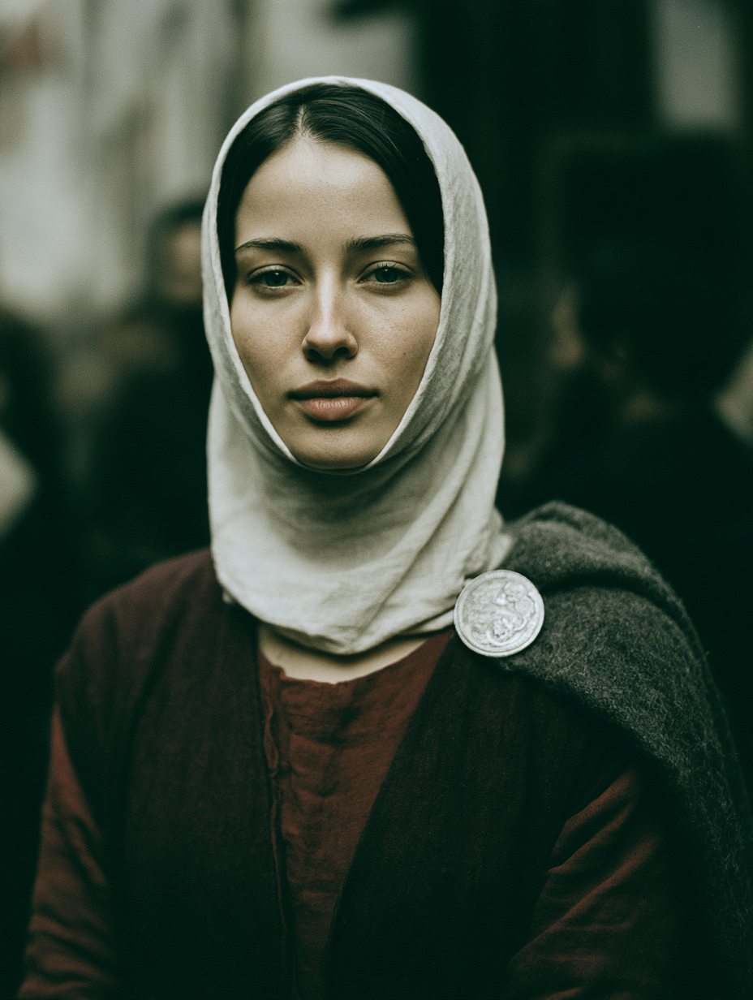
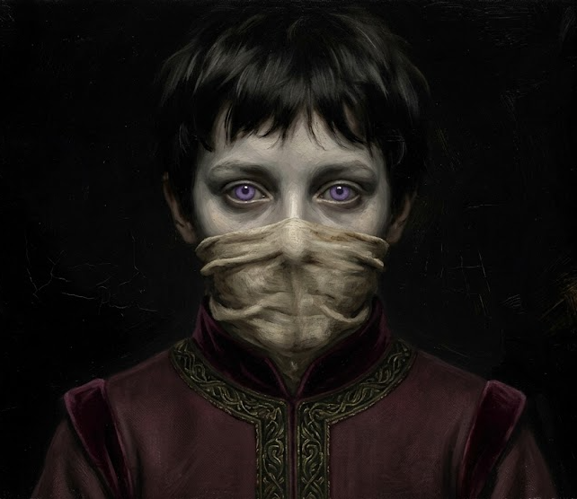
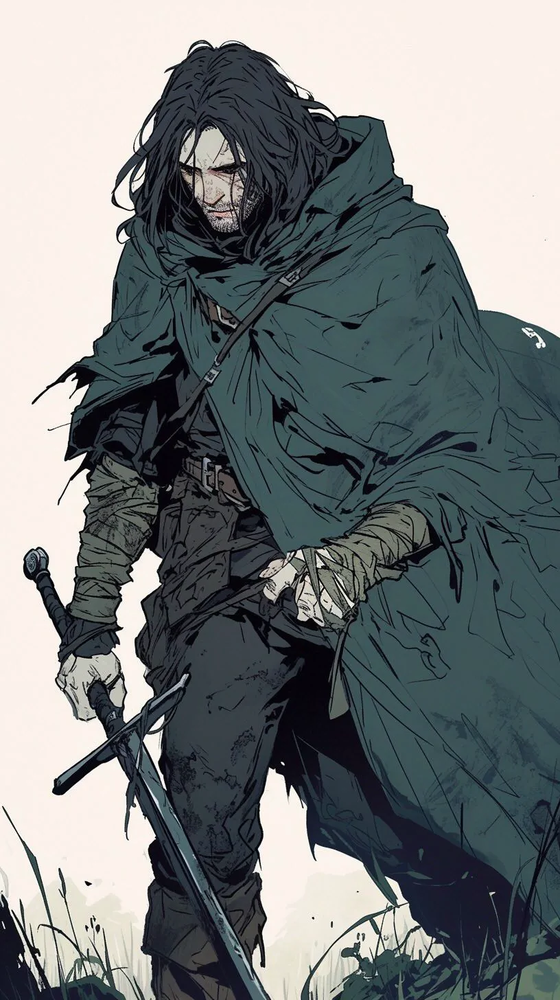

The Coterie
Four young Cainites, homeward from Norway · 1242
The errand-runners Mithras trusts to fetch what no hired mortal can be trusted with — dangerous, low-status work that most Kindred do not survive long enough to profit from, and precisely for that reason one of the few ladders a hungry neonate can climb. They have been a coterie perhaps two years, a handful of jobs deep: long enough to know the basics of one another, not long enough to be friends by default. Session One was the first night it cost any of them anything.
The Four
✦
Tomisława z Białowieży · "Queen of the Swamp"
The occult and infrastructural core
A brilliant, fragile political glass cannon walking the rigid Road of Kings with an aura of supreme, chilling self-mastery. She is the coterie's engine: she opened her wrist into a barrel of drinking water, put her senses five hundred metres out through the sea, found the raider hull grinding against her own, and pulled it off on a swell — the single decisive act of the fight, performed while everyone else was stabbing people. She is also the most fragile body at the table, and Session One demonstrated that at greater length than she would like.
She did not choose these three. She chose Mithras, and they came attached. Her element is water; her appetite is fire — and she now knows her out-of-category peer cannot help her reach it.
Her complete dossier — attributes, disciplines, rituals, household and herd — lives in the Household of Białowieży document.

Eustace the Kiasyd · "I'm not like the other children"
Her one true peer
A fae-touched Lasombra embraced into a twelve-year-old's body more than four decades ago — a creature past fifty wearing a child's frozen shape. Proud of the clan, unbothered by the faith (it's all real, and none of it's real is how I view it), and by turns petulant and coldly calculated: a sadist whose cruelty points toward mastery rather than appetite. He spent one fight patiently sawing into a man's skull with a knife and Strength 1 to get at the brain, and fabricated an entire noble childhood on the spot. London's Lasombra keep him at arm's length and post him as a local watcher; he is content with the leash, because distance is room to manoeuvre.
To Tomisława: her equal by armistice — two absolute convictions of superiority that have agreed not to fight. He has conceded she is genuinely, if provincially, noble; he has also, now, watched her lose — wept and thrashing in Oscar's arms — and said nothing about it. The next time he asks her for Vicissitude, he will be asking from a position he did not hold before.

Méabh "Tomisława's Irish cousin"
Guide, liar, and the coterie's hinge
One of the last of a doomed bloodline — carrying a fragment of her sire's soul and a literal piece of her forest, hunted by the Gangrel who would end her line, split from her sire in a raid and hoping to find him again. She walks the Road of the Beast, hunts with a pack, and works her magic as runes cut into her own skin, matriarchal rites she traces to the Crone. On the surface she is sweet, innocent, mild-mannered; underneath she is five steps ahead and wants to be the predator in every room. A spider playing at being a lamb.
To Tomisława: the kinswoman she invented. By the plain rules Méabh should rank low; instead Tomisława lifts her clean off the ladder and holds her out-of-category — a peer on the old powers of the earth, unmeasured on all else. Their cover is welded together: Méabh's claim to kinship survives on Tomisława's credit, which makes each a hostage of the other. Her heart, though, belongs to Oscar, not her patron.
Scéalán — the red wolf
Her familiar: a red wolf grown large on her blood, named for one of the hounds of the Fianna cycle. Blood-fed and battle-scarred; he intercepted two raiders in the hold and dragged one down by the calf so Oscar could finish it. Where Méabh goes, he is put between her and the room.

Oscar Castro Avis "Disgraced" · the fallen knight of Lisbon
The muscle, and the group's reluctant conscience
A Brujah of Lisbon — philosopher-kings, not rebels, in these nights. A fourth or fifth son raised to the sword and to real purpose, a knight who believed in it, undone by scandal and a lord's betrayal and dragged out of that ruin by a sire who eventually tired of his self-pity and sent him to the Isles with a hard instruction: go find yourself. His nature is honourable; his demeanour is nihilistic. He reads people well, and is a violent man trying to stop reaching for violence as the easy answer. His surcoat is a black Templar standard — black paint laid over what, up close, you can tell used to be a cross.
Session One was largely his fight: Blood Surge, Potence and Claymore through a hold full of raiders, ending fed to zero on drugged blood and cheerful. Then he broke Tomisława's jaw open to pry her off Bronisława and held her through the frenzy — competent, unsentimental, unpaid.
To Tomisława: the one she files as her inferior — not for clan (he shares her rank exactly) but for abdication, a nobleman playing hired sword. She refuses to see that they are mirror childer, both cast out by hard sires to remake themselves at a distance: she is what that process looks like when it succeeds, he is what it looks like mid-collapse. He is quietly becoming the group's exasperated uncle — and something with no drawer in her filing system.
The Shape of the Group
✦The coterie's own reckoning: two high-clan aristocrats at the top, two displaced exiles beneath them, and Méabh moving across the seam. What Session One demonstrated is that the reckoning and the actual load-bearing structure are not the same object. Under pressure the traffic did not run along the status lines — it ran Eustace and Oscar in the water, hauling and mocking each other; Oscar and Tomisława on the barn floor; Méabh and a nun.
Tomisława and Eustace agree they are the top pair — and disagree on how to rank the bottom one. Eustace lumps Méabh and Oscar together as beneath them both; Tomisława files Oscar low but holds Méabh out-of-category. Méabh's cover now rests entirely on Tomisława's credibility, which gives Tomisława a hostage and Méabh a bomb. And Oscar — the one they agree to file as "help" — spent the session being the most consequential body in the group, and is not staying filed.
Dramatis Personae
The people the envoy has met — and one it lied about
Compiled from Session One. Attributions marked presumed are the coterie's best reading, not established fact.

Ludan "a bolt of red" · presumed Nosferatu
Stowaway · wanted by the Order of Absolution
A lid came off a box nobody had accounted for and a man sat up in it: patchwork leathers, a wooden mask with slits for the eyes and mouth and a mustache carved into it, a shock of red hair, and a box full of dead rodents. He had ridden the whole voyage unseen. Eustace couldn't get eye contact through the mask — which ruled out Dominate and annoyed him considerably — and later worked it out on politics: masks are courtesy in courts that contain Toreador, worn by the disfigured, and an unseen passenger points one way. Nosferatu, probably. Possibly several other things. The clan is a guess, not a fact.
Going overboard from the burning ship, he yelled fucking Catholics at the approaching riders and followed the frenzied pair into the surf. On the beach he gave Oscar a small wooden coin, well carved with a dancing fox — if you find yourself around Cambridge, ask for a bolt of red — and gave Eustace a knife: okay, you're forgiven. Then: if anyone asks, you didn't see me. And he was into the woods. Oscar read him as lying through his teeth about something, and let him go anyway.
He carries something very important. Sister Mary hears the intention more clearly than the details. The coterie has his trail — Cambridge, a bolt of red — and lied to a knightly order about knowing it.

Guarin of Jersey Commander of the Order · Kindred
The one she did not choose
He rode up, lifted his visor, apologised for the butchery, and produced a boarding ramp his men had been carrying for exactly this — then offered hospitality to "her cousin and herself," pets and servants included, looking at the wolf's bloody muzzle and saying yes anyway. Oscar read him as an entirely sincere man, properly carried, none of Oscar's own jadedness in him — and wearing ornate ceremonial armour that has seen far more pageantry than battle. Worked into it: sigils, not runic, of no school Méabh recognises. Someone with real power made it, or gave it to him.
Starving on the barn floor, Tomisława took his freely-offered wrist and drank. His blood is noticeably thicker than her own.
By her Bond Slave flaw, one drink is the whole bond. She did not run a risk; she acquired a regnant — roughly an hour after meeting him. He is a knight of an order that hunts her kind, he does not know what she is, and he does not know he holds her. She survived the barn only because he handed the one dangerous question to the nun, to whom she is not bound. (Pending the GM's confirmation; the transcript reads as deferral rather than a ruling.)

Mary, Sister of Sorrow Nun of the Order · Salubri
The healer she must keep her eyes down around
A nun in full habit who knowingly walked into a vampire's frenzy to end it — pure intentions on a critical read. She stepped past the thrashing, closed her eyes, laid a hand on Tomisława's forehead, gave back three willpower and ended it. Doing it, she bled: a red stain spreading through the white at her hairline — a third eye, not a wound — which she failed to cover in time, and from which Eustace drew his conclusion. The Lord speaks to me sometimes; the intention is clearer than the details.
In 1242 she is a hunted remnant of the clan the Tremere are busy exterminating and libelling as infernalists — prey to the same appetite that circles the koldun, from the other direction. She is also, mechanically, the single best ally in Christendom for a five-health glass cannon with Stake Bait. And she wears a crucifix, so Tomisława cannot look directly at her. The one person who could mend her is the one person she must keep her eyes down around.
The Order of Absolution
Knightly order & Road cult — the road to Heaven
A red Maltese cross on black. Sworn to protect pilgrims and holy sites — not crusaders — well known in the Isles and seated at Norwich, and known to be under Kindred influence, at least in Britain. They serve Theodore of Absolution, and through him the road to Heaven. Mithras is no Christian, but he is not their open enemy either. They did not come to the wreck for bandits: they were hunting a man with red hair, and possibly a mask.
Mithras
Prince of London
The being Tomisława chose — the first time she understood beings of his stature existed. At the debrief a door opened and the room filled with light that felt like sunlight and did not burn; the Beast recoiled on instinct, then grudgingly conceded it was in no danger. Everyone knelt without being told. There was the sound of metal meeting meat, and Thomas's head arrived in their peripheral vision. Rise, he said — heard the report that the envoy had revealed nothing, judged that his enemies had revealed themselves, said proceed, and left. The errand-boy phase is over.
Richard de Worde
Nosferatu · Mithras's spymaster
He refuses to hide his ruined face — melted, swollen flesh on open display above a nobleman's clothes, worn with evident pleasure, a standing insult to every Toreador in the court. His questions were gentle and were not gentle. He accepted Ludan as coincidence and bad luck, unconnected to the envoy's purpose. He has had eyes on Graf Światosław the entire time the coterie was abroad — and told Tomisława so, to her face, after she volunteered that her husband knew. He claimed the fault for the leak as his own before Mithras. Now this means we can start the real work.
Thomas
Mithras's man · gave them the mission
The one who handed the envoy its errand — and, it turned out, the leak. Beheaded in front of them by Mithras at the debrief. A small number of people had been given information about the mission; it was Thomas. But certain people is plural, and "the enemies revealing themselves" is doing a great deal of quiet work in that sentence.
The Chronicle
A running record of the envoy's nights
The errand was simple and beneath them: carry a chest they knew better than to open to a band of Cainites in Norway, travel in secret, make a good impression. By every account it went well — better than well. Then, a week and a bit at sea, the ship stopped moving.
The Hold
Eustace woke first, to thunder above and screaming men, rain pooling pink through the deck seams and a hatch banging open onto lethal daylight. Bronisława already had her mistress's lid off and gave him a look of pure resignation. A raider came down the steps; Eustace caught his gaze and mesmerized him back up the stairs, rationalized so cleanly the man thought it his own idea. Méabh and Tomisława woke next — Méabh whispering Gaelic at Scéalán to defend her, Tomisława asking for a water barrel.
She opened her wrist, plunged her hand in, and burned three aggravated for a third of a mile of koldunic sight — saw their ship beached, a second hull alongside, their own sail burning — then critted Elemental Grasp and pulled the raider ship off her hull on a swell, stranding the rest. She stayed in the barrel for the fight, narrating. The rest was Oscar's: woken early and hard out of torpor, Blood Surge and Claymore, he took the last raider's torch-arm off at the shoulder and drained him with Brutal Feed, ending fed to zero and cheerful. Above, the raiders scattered; armored cavalry came down the hill.
Interlude — The Voyage Down
A flashback to the nights before the crash: nothing to do in a box but talk, one topic each. Oscar asked about mortal family and got least of anyone — Tomisława confirmed only a nobleman husband; Méabh slid into myth; Oscar went quiet: I was a knight. I took off. Tomisława asked whether Méabh's tradition worked fire and got a blank look, and was deeply disappointed. Eustace asked about breeding and sized everyone up — filed Méabh a fraud (was your wolf a noble too?) and Tomisława, after both critted, as genuinely noble and permanently queen of the swamp. On God, Oscar warned Méabh to be careful who she tells: people must believe the narrative for it to have power.
The armistice between the peers is settled here: her rank respected, her country a bog. Méabh's kinship survives on Tomisława's credit, not her own.Nightfall, and Ludan
The sun went down; the mast kept burning. A lid came off a box nobody had accounted for and Ludan sat up in it — wooden mask, carved mustache, red hair, a box of dead rodents, aboard the whole voyage unseen. Eustace couldn't get eye contact through the mask and worked out Nosferatu on politics. Facing the fire, Eustace and Oscar both frenzied and went over the side; Ludan yelled fucking Catholics and followed; Méabh ran. Tomisława did not frenzy — she stood on the burning deck and studied the flames, fascinated, with Bronisława beside her. She and Méabh read the riders' heraldry: the Order of Absolution.
Down the coast, Oscar hauled Eustace bodily through the surf by the scruff — didn't they teach you to swim in Hell, demon child — the shadows thickening as Eustace seethed. On the beach Ludan gave Oscar a fox-carved coin (in Cambridge, ask for a bolt of red) and Eustace a knife, and vanished into the woods.
The Order
Tomisława elected to present rather than hide — veiled, claiming an illness of the sight, led by the hand by Bronisława. Guarin of Jersey lifted his visor, apologised for the butchery, and produced a boarding ramp, offering to host her "cousin and herself." Up the hill rode mounted knights and one nun, Mary, Sister of Sorrow. Tomisława's attempt to conceal Ludan went to a bestial failure and her hunger rose. Oscar read Guarin as sincere and his ornate armour as under-worn; Méabh read sigils in it belonging to no school she knows. They rode to a barn in Suffolk.
The Barn
Hungry, holding a lie together, Tomisława took Bronisława by the wrist and asked Méabh to stop her once she'd had a sip. She could not stop; Méabh was not strong enough. Oscar broke the latch of her jaw the way you would with a dog, pried her off, and held her through a full hunger frenzy while she thrashed and wept and begged — in front of Eustace. She named the shame herself. Méabh fetched Mary, who walked in knowing exactly what she faced, laid a hand on Tomisława's forehead, gave three willpower and an end to it — and bled from beneath her habit doing it. Then Guarin undid a gauntlet and offered his wrist: I have blood to spare. She drank, down to hunger 1.
By the Bond Slave flaw, one drink is the whole bond. She stood up in that barn blood bound to a knight of the Order of Absolution, roughly an hour after meeting him — and then compelled Bronisława to sleep so the rest could speak.What The Order Wanted
Guarin asked their business; Tomisława gave him the husband in London — which cost her nothing, as she'd said it before the bond. It was Oscar who added, unprompted, that they work for Mithras. Then Guarin admitted the Order had not come for bandits: they were hunting a red-haired man, possibly masked. He handed the questioning to Mary — we believe he has something very important — and the coterie said nothing.
The hinge of the session, unclocked at the table: Tomisława was bound to Guarin, who could have compelled the truth — but the one dangerous question was asked by Mary, to whom she is not bound. The secret survived on which of the two happened to be talking.The Debrief
Called in by Thomas in London — with Richard de Worde present, which was new. The spymaster's questions were gentle and were not gentle. They gave him Ludan; he accepted it as coincidence. Tomisława said her husband knew, and had been at court the whole time; Richard said we've had eyes on him. Then a door opened and the room filled with light like sunlight that did not burn. Everyone knelt. Metal met meat, and the head of Thomas arrived in their peripheral vision. Rise, said Mithras. Richard claimed the fault — the rat was Thomas, the envoy revealed nothing. Our enemies have revealed themselves. And these ones can be trusted? — Proceed. Then, mildly: Now this means we can start the real work.
Threads Left Hanging
✦- Ludan and the bolt of red. They know where to find him — Cambridge — and lied to a knightly order about it.
- What Ludan has. Mary believes it matters, and Mary is Salubri, which narrows the field. She would probably tell them if asked.
- The bestial failure. Tomisława's concealment of Ludan failed badly; Guarin and Mary may have registered that she answered a slightly different question.
- "The real work." Whatever the chest bought in Norway, Richard considers the envoy phase concluded.
- The leak. Thomas is dead, but certain people is plural.
- Guarin's armour. Someone with real, unfamiliar power made or gave it — sigils of no known school.
- The blood bond. Tomisława is bound to Guarin of Jersey. She cannot refuse him a direct question; he does not appear to know he holds the leash, nor what she is. (Pending the GM's confirmation.)
- Two unresolved stains — Oscar's, for the lie to the Order; Tomisława's, for behaving shamefully before her peers.
Where the coterie, its premise, and its errand were established — the arrangement going in, before Session One cost any of them anything. Revised in light of what the first night revealed.
The Premise
Four young Cainites bound together in the service of Mithras, Prince of London, and sent out as his envoy — the errand-runners trusted to fetch what no hired mortal can be trusted with. Dangerous, low-status work most Kindred do not survive to profit from, and for that reason one of the few ladders a hungry neonate can climb. Tomisława did not choose the other three; she chose Mithras, and was overwhelmed by him — the first time she understood beings of his stature existed. When he said jump, she asked how high.
The Coterie
The arrangement going in: two high-clan aristocrats at the top, two displaced exiles beneath them, and Méabh moving across the seam. Tomisława z Białowieży, Tzimisce koldun of the Road of Kings — the occult and infrastructural core. Eustace the Kiasyd, fae-touched Lasombra of Marconius's line, Road of Kings — her one true peer, by armistice. Méabh, Lhiannan hiding as high-clan kin, Road of the Beast — guide, liar, and the coterie's hinge, whom Tomisława holds out-of-category. Oscar "Disgraced" Castro Avis, fallen Brujah knight of Lisbon, Road of Humanity — the muscle, and the group's reluctant conscience, whom Tomisława files as her inferior for having thrown his rank away.
Full portraits and profiles are on the Coterie page.The Errand to Norway
The framing mission: carry a small chest — one they knew better than to open — to a band of Cainites in Norway, learn what could be learned, make a good impression, and above all travel in secret. What was there: Cainites with the trappings of Vikings, mostly Gangrel, holding hard against a Christianity that has been closing around them. They work the old ways — magic through the land, worked with it. Their mortals know what they are and are fed from directly, throat to mouth, often dosed with something that makes the blood strange, a shaman presiding; and women hold more power among them than in the courts of Europe.
For Tomisława, a place where earth-drawn blood sorcery is unremarkable and a woman with authority is no curiosity — she had a better time there than she is likely to have in London. The others fared worse on a telling gradient: Oscar found them charming and hollow, Eustace found their reverence for cleverness more interesting than expected, and Méabh — closest to them in kind — closed up completely.
The delivery went well; the impression was good. The chest is why Thomas is dead. Norway is not a punchline — it is the opening move of whatever "the real work" turns out to be.On the Table for Session Two
The coterie is off the rails and setting its own pace; travel is on them now, and the road — not the courtroom — is the dangerous part. Players' wishes: Oscar's wants the tragic, depressive side rather than the bastard; Eustace's wants to complicate him beyond the petulant ambassador-child and untangle something with Méabh; Méabh's is a long game, with any hint of her sire the priority; Tomisława's is fire and the Veins of the Earth. The GM is building a non-Christian throughline for every character. Two weeks. The 31st.